Every sketch geom shares four parameters that shape the hand-drawn
look: roughness, bowing,
n_passes, and seed. They are layer parameters
(not aesthetics), so you pass them to the geom_sketch_*()
call.
roughness
How far points are displaced. 0 is ruler-straight; the
default is 1; values above ~3 get loose and
scribbly.
x <- seq(0, 10, length.out = 50)
d <- data.frame(x = x, y = sin(x))
ggplot(d, aes(x, y)) +
geom_sketch_line(aes(colour = "0.0 (straight)"), roughness = 0, seed = 2) +
geom_sketch_line(aes(colour = "1.0 (default)"), roughness = 1, seed = 2) +
geom_sketch_line(aes(colour = "2.5"), roughness = 2.5, seed = 2) +
geom_sketch_line(aes(colour = "5.0 (loose)"), roughness = 5, seed = 2) +
scale_colour_brewer("roughness", palette = "Set1") +
labs(title = "The roughness dial") +
theme_sketch()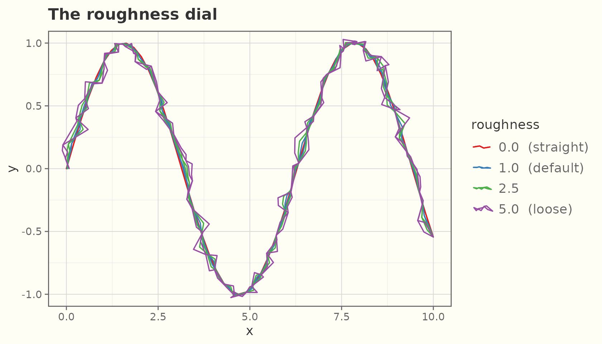
On bars:
df <- data.frame(x = c("A", "B", "C"), y = c(4, 6, 3))
for (r in c(0, 1, 3)) {
print(
ggplot(df, aes(x, y)) +
geom_sketch_col(fill = "#7BAFD4", roughness = r, seed = 1L) +
labs(subtitle = paste("roughness =", r), x = NULL) +
theme_sketch(base_size = 9)
)
}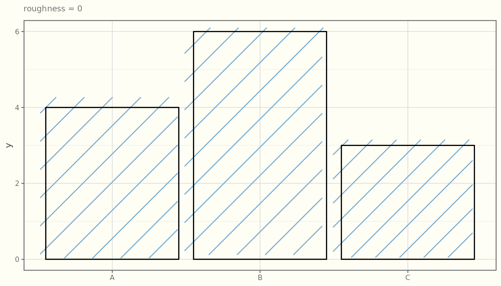
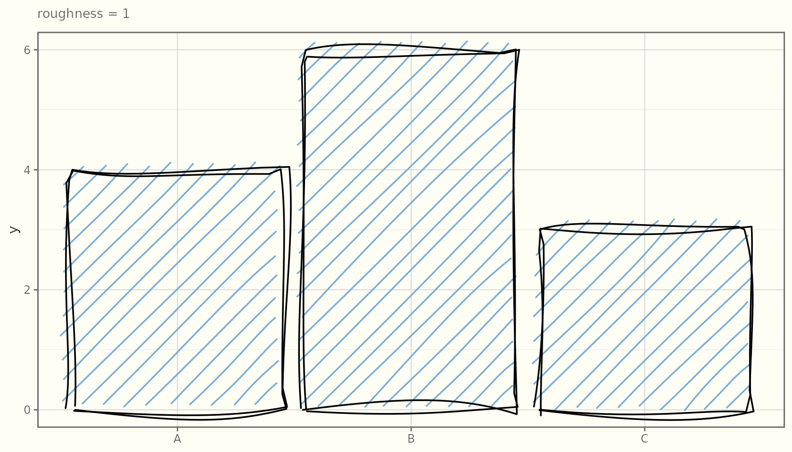
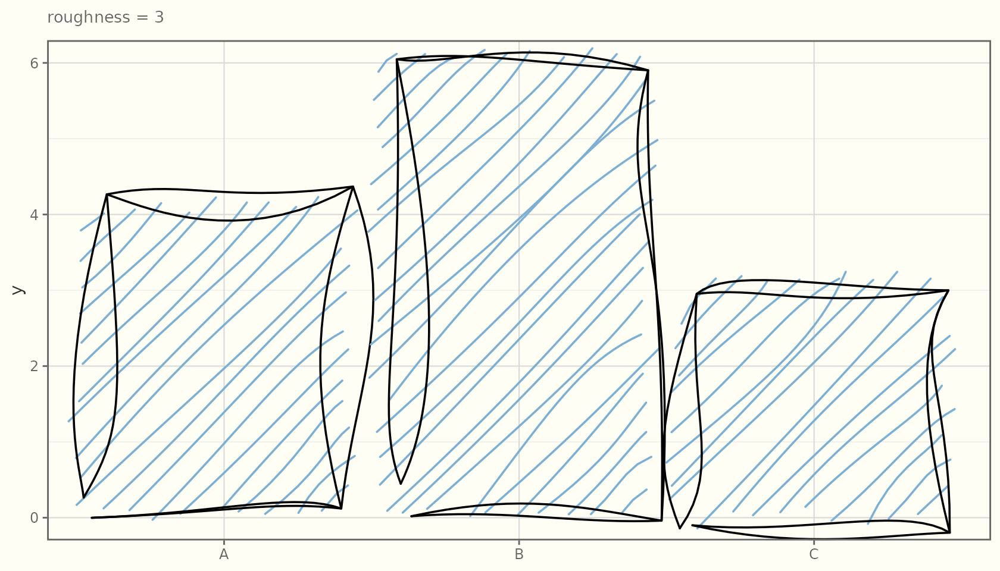
bowing
How much line segments bow (curve) between their endpoints. Higher values give a springier, more relaxed stroke.
seg <- data.frame(x = 1, y = 1, xend = 6, yend = 4)
for (b in c(0, 2, 5)) {
print(
ggplot(seg) +
geom_sketch_segment(aes(x = x, y = y, xend = xend, yend = yend),
bowing = b, roughness = 0.6, linewidth = 1,
seed = 7L) +
labs(subtitle = paste("bowing =", b)) +
theme_sketch(base_size = 9)
)
}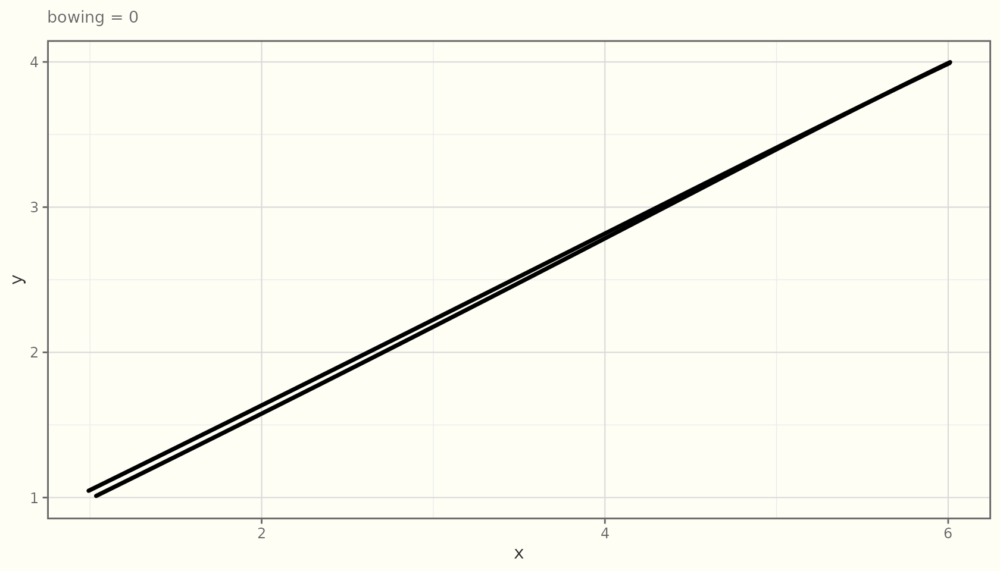
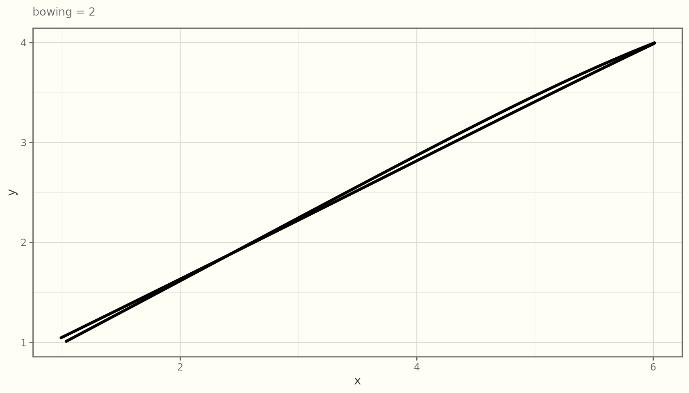
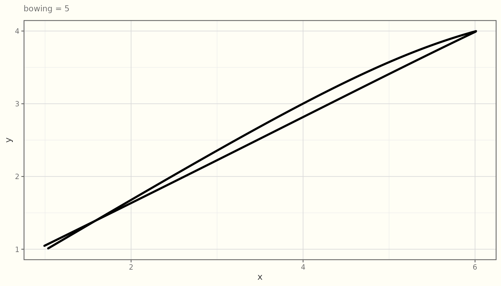
n_passes
How many overlaid strokes to draw. 2 (the default) gives
the classic “double-stroke” sketch look; 1 is a single
pass; 3+ looks heavily worked.
for (n in c(1, 2, 4)) {
print(
ggplot(d, aes(x, y)) +
geom_sketch_line(n_passes = n, roughness = 1.5, linewidth = 0.7,
colour = "grey20", seed = 3L) +
labs(subtitle = paste("n_passes =", n)) +
theme_sketch(base_size = 9)
)
}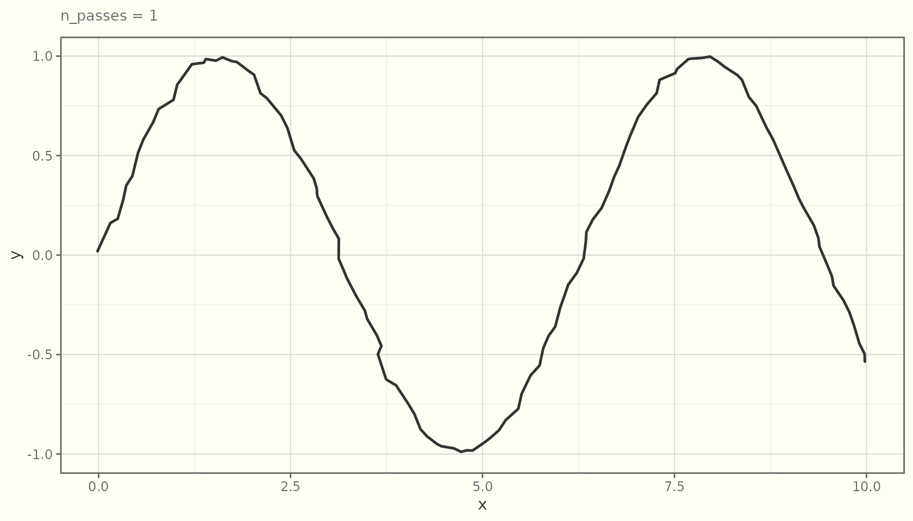
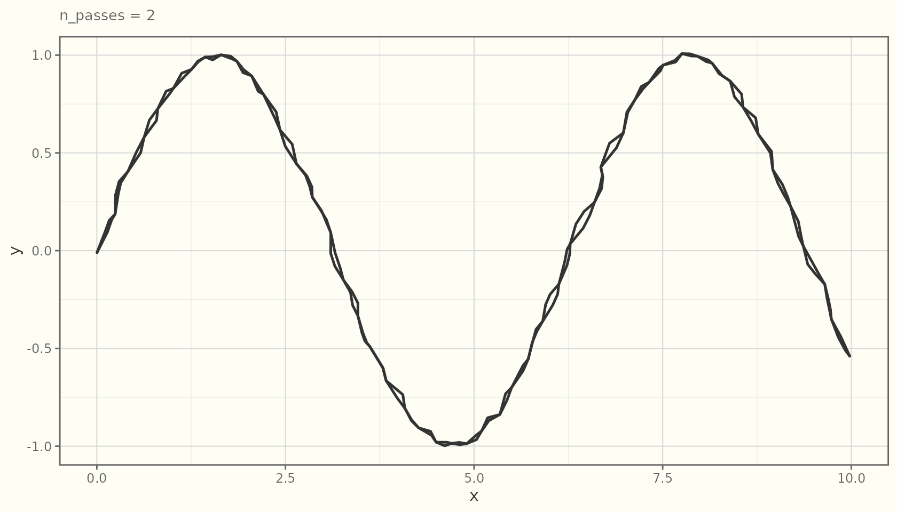
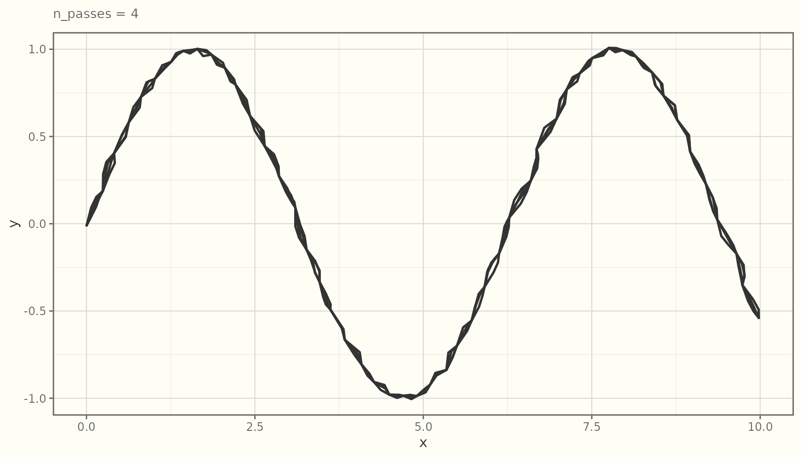
seed — reproducible wobble
The sketch is random, but seeded. A given
seed always produces the same drawing, so figures are
reproducible across renders and devices. Change the seed for a fresh
“hand”.
d2 <- data.frame(x = 1:8, y = c(2, 5, 3, 8, 6, 9, 7, 10))
for (s in c(1, 1, 42)) {
print(
ggplot(d2, aes(x, y)) +
geom_sketch_line(linewidth = 1, seed = s) +
geom_sketch_point(size = 3, seed = s + 100) +
labs(subtitle = paste("seed =", s)) +
theme_sketch(base_size = 9)
)
}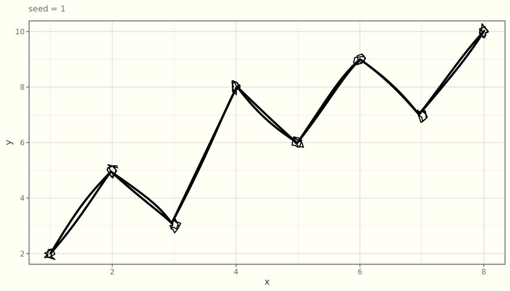

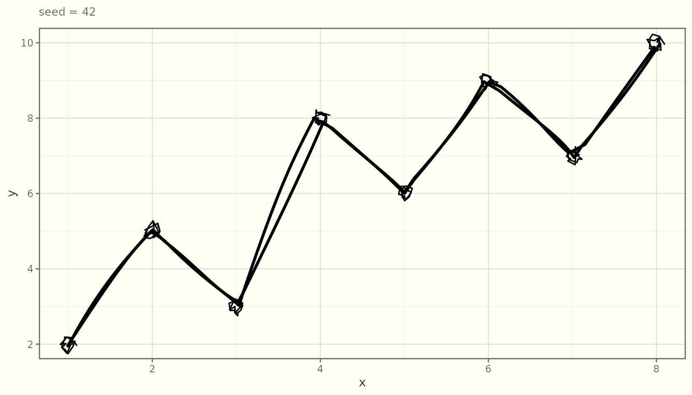
The first two panels are identical (same seed); the third differs.
Session-wide default
If you do not pass seed, geoms use
getOption("ggsketch.seed", 1L). Set it once to make a whole
document reproducible:
options(ggsketch.seed = 1L)ggsketch never touches your global random state: each randomized
routine draws from its own seeded stream and restores
.Random.seed afterward, so it will not interfere with
set.seed() elsewhere in your analysis.